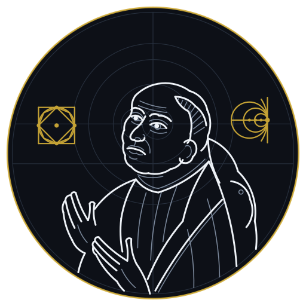

Nicholas of Cusa¶

Nicholas of Cusa (1401–1464) stood at the threshold between medieval Scholasticism and modern projective geometry—discovering in the asymptotic limit of an infinite circle the coincidence of opposites (coincidentia oppositorum), where curved and straight become one and the cosmos loses any privileged center. This synchronized four-track Latin–English archive pairs his philosophical masterpiece De Docta Ignorantia (1440) with four constructive mathematical treatises (Scripta Mathematica, 1445–1459) and exact symbolic reconstructions.
Books in This Collection¶
Primary Edition · 1440 · Books I & II · 4 Tracks
On Learned Ignorance & Mathematical Writings (De Docta Ignorantia) — Cusa’s landmark treatise completed at Kues on February 12, 1440: Book I (Ch. 1–4, 11–23) ascends from finite ratio to the infinite maximum where line, triangle, circle, and sphere coincide; Book II (Ch. 11–12) unfolds a centerless cosmos whose center is everywhere and circumference nowhere.
Mathematical Opuscula · 1445–1459 · 4 Treatises · 4 Tracks
De Mathematicis Complementis (Scripta Mathematica) — Cusa’s four constructive treatises on geometric transmutation and circle rectification: De Geometricis Transmutationibus (1445), De Mathematicis Complementis (1453), De Mathematica Perfectione (1458), and Aurea Propositio in Mathematicis (1459).
Key Features¶
Four Synchronized Codex Tracks
Every chapter pairs collated Latin (1440 / 1514–1913 witnesses) with an original English translation, structural summary, and geometric-theological notes.
Nine Calibrated Vector Plates & SymPy Proofs
Explore theme-adaptive SVG figures of Cusa’s circle-line coincidence, Möbius inversion, polygon exhaustion, and three-ray rectification alongside exact algebraic proofs in Demos.
Cross-Corpus Concordance & Lexicon
Trace 15 canonical Cusan loci to Plato, Aristotle, Euclid, Archimedes, Proclus, Aquinas, Kepler, and Klein in the Concordance, supported by 26 technical terms in the Glossary.
Reference & Project¶
Scholarly Apparatus
Concordance — 15 Cusan loci linked across the classical and modern GEOMETOR canon
Glossary — 26 Latin, Greek, and constructive Cusan concepts
People & Bibliography — Biographical profiles and 28 primary/secondary editions
About This Project
About & Editions & Sources — Editorial scope and textual provenance
Using This Edition & Symbolic Demos — Codex navigation and exact SymPy constructions in
geometor.cusaLog & Modules — Development notes and Python API documentation